モデルの作成とデータベースの利用
コントローラとアクションそしてビューを使って簡単なサンプルを作ってきました。最後にモデルを作成しデータベースに格納されたデータのやり取りを行なうサンプルを作成してみます。ここでは細かい説明は省略して実際に使うところまでを解説しています。手順は長いですが、一つ一つ見ていただけばお分かり頂けるかと思います。
1.データベースの設定ファイル
2.データベースの作成
3.モデルの作成
4.マイグレーションを使ったテーブル作成
5.テスト用データの作成
6.モデルを使ってデータベースのデータを取得
7.動作確認
※ モデルに関する詳細は「モデルとデータベース」をご参照下さい。
データベースの設定ファイル
Railsアプリケーションを「rails new アプリケーション名」コマンドで作成する時、明示的に指定しなければデータベースとしてSQLiteを使用するように設定されます。そしてアプリケーションからデータベースを利用する時の設定は「config\database.yml」ファイルに記載されます。
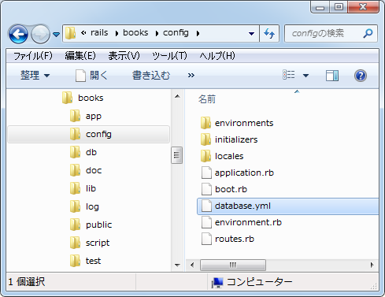
このファイルをテキストエディタで開いてみると次のように表示されます。
# SQLite version 3.x # gem install sqlite3 # # Ensure the SQLite 3 gem is defined in your Gemfile # gem 'sqlite3' development: adapter: sqlite3 database: db/development.sqlite3 pool: 5 timeout: 5000 # Warning: The database defined as "test" will be erased and # re-generated from your development database when you run "rake". # Do not set this db to the same as development or production. test: adapter: sqlite3 database: db/test.sqlite3 pool: 5 timeout: 5000 production: adapter: sqlite3 database: db/production.sqlite3 pool: 5 timeout: 5000
設定ファイルは「development」「test」「production」の3つのモードに分かれており、開発用、テスト用、本番用、で異なる設定が出来るようになっています。MySQLを利用する場合はユーザー名やパスワードの設定も加わります。
ここではこのファイルの細かい設定方法については省略しますが、開発モードで動かしている場合はSQLiteのデータベースファイルが「db\development.sqlite3」という名前で作成されることだけ確認しておいて下さい。
データベースの作成
それではまずデータベースを作成します。使用するデータベースの種類はSQLiteやMySQLなどがありますが、Railsアプリケーションからデータベースを作成する場合は、コマンドプロンプトを起動しアプリケーションルートに移動してから次のようにコマンドを実行すればデータベースが作成されます。
rake db:create

「db」ディレクトリを見てみると、開発用とテスト用のデータベースがそれぞれ作成されています。
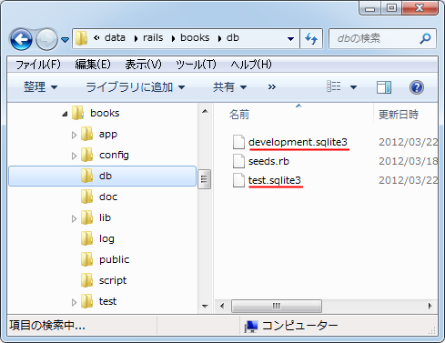
モデルの作成
ではモデルを作成します。アプリケーションのルートディレクトリに移動し、次のようにコマンドを実行して下さい。
rails generate model モデル名 rails generate model モデル名 フィールド名1:データ型1 ...
※ 後で説明いたしますが、モデルを作成するとマイグレーションファイルと呼ばれるテーブルの作成や更新のためのファイルも自動的に作成されます。2番目の書式を使った場合はテーブルに含むフィールド名とデータ型も同時に指定できます。今回はその部分は手動で行ないますので、最初の書式を使います。
今回は「title」モデルを作成してみます。(Enterキーを押してから反応があるまで少し時間が空きます)。
rails generate model title
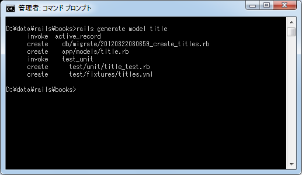
いくつかのファイルが作成されていますが「app\models\title.rb」が作成したモデルに関して記述されたファイルとなります。
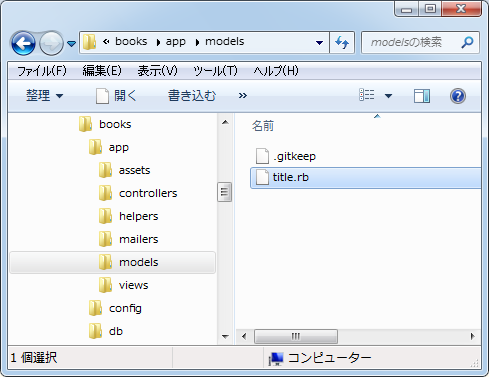
それでは作成された「title.rb」ファイルをテキストエディタで開いてみます。
class Title < ActiveRecord::Base end
このようにモデルを作成すると「ActiveRecord::Base」クラスを継承し、名前が「モデル名」のクラスが定義されます(モデル名の先頭は大文字となります)。
このクラスではデータベースの情報のやり取りに関する処理を記述することになるのですが、継承している「ActiveRecord::Base」クラスに基本的なメソッドは定義されているため、特に何も記述しなくても簡単な処理を行なうことができます。
マイグレーションを使ったテーブル作成
モデルを作成した時に「db\migrate\20120322080659_create_titles.rb」というファイルも作成されています。これはマイグレーションスクリプトと呼ばれるファイルと呼ばれているものです。
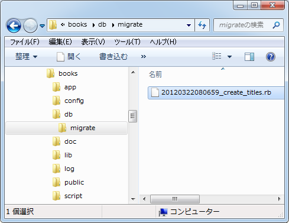
マイグレーションに関して簡単にご説明をしておきます。データベースは既に作成していますが、データを格納するにはテーブルを作成しなければなりません。Railsとは関係無くデータベースの持つ機能を使ってテーブルを作成することはもちろん可能です。ただRailsではテーブルの作成や変更の仕組みとしてマイグレーションと呼ばれる機能が提供されています。
マイグレーションとは、例えばテーブルを作成するのに直接作成するのではなく、テーブルを作成するというスクリプトファイルを作成した上で、そのスクリプトを実行することでテーブルを作成するものです。なぜこのような手間をかけるのかと言えば、(1)テーブルに関して行なった処理を記録し、元に戻したり別の環境で同じ処理を簡単に行なわせることができる、(2)データベースの種類に関係無く同じスクリプトでテーブルを作成できる、といった利点があります。
それでは作成された「20120322080659_create_titles.rb」ファイルをテキストエディタで開いてみます。
class CreateTitles < ActiveRecord::Migration
def change
create_table :titles do |t|
t.timestamps
end
end
end
ここでは詳細な説明は省略させて頂きます。「name」カラムと「sales_data」カラムを持つ「titles」テーブルを作成するためには次のように編集します。
class CreateTitles < ActiveRecord::Migration
def change
create_table :titles do |t|
t.string :name
t.date :sales_date
t.timestamps
end
end
end
これでマイグレーションの準備はできました。ではアプリケーションルートに移動してから次のようにコマンドを実行してマイグレーションスクリプトを実行して下さい。
rake db:migrate
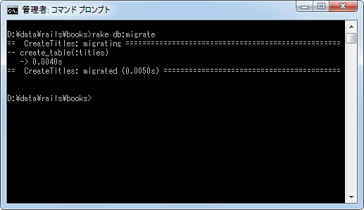
今回作成したマイグレーションスクリプトはテーブルを作成するものですので、スクリプトを実行するとデータベースの中にテーブルが作成されます。
テスト用データの作成
モデルの作成とデータベース側で必要なテーブルの作成までは完了しました。簡単なサンプルを作成するために、テーブルにいくつかデータを登録しておきます。
Railsではテーブルにデータを登録する仕組みが用意されています。「db」ディレクトリの中に「seeds.rb」というファイルが作成されています。
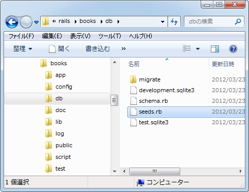
このファイルをテキストエディタで開き、次のように編集します。
# coding: utf-8 Title.create(:name => '宇宙に行った日', :sales_date => '2011-06-28') Title.create(:name => '観察日記', :sales_date => '2011-11-14')
「title」モデルの「create」メソッドを使いテーブルにデータを追加します。編集が終わりましたら文字コードを UTF-8 で上書き保存して下さい。
ではアプリケーションルートに移動してから先程記述したスクリプトを実行して下さい。
rake db:seed

「titles」テーブルに2つのデータが登録されました。
では念の為に確認しておきます。アプリケーションルートに移動してから次のように実行して下さい。現在のデータベースの設定に従い、SQLiteのコマンドラインツールが起動します。
rails dbconsole
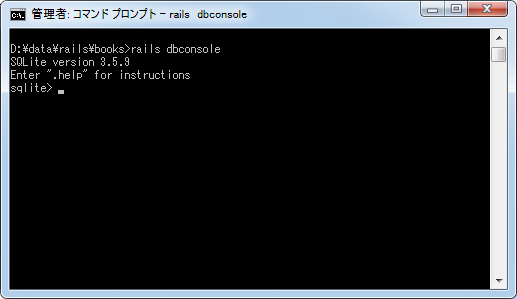
「titles」テーブルから全データを取得してみます。
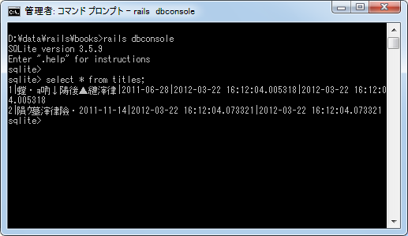
2件のデータが登録されています。日本語の部分が文字化けしておりますが、WindowsのコマンドプロンプトではUTF-8で記述された日本語文字列を文字化けせずに表示する手段がありませんので気にしないで下さい。
これでサンプルデータの登録は完了です。クライアントを閉じる場合は「.quit」と実行して下さい。
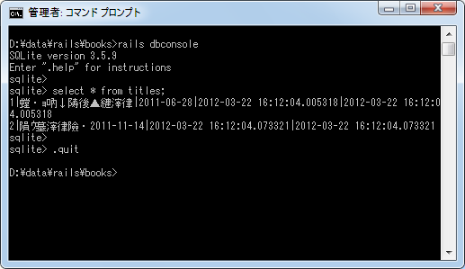
モデルを使ってデータベースのデータを取得
それではモデルを使ってデータベースのデータを取得してみます。まずアクションメソッドを書き換えます。「app\controllers\booklist_controller.rb」ファイルをテキストエディタで開いて下さい。
class BooklistController < ApplicationController def hello end end
今回は既存の「hello」アクションを使います。次のように編集して下さい。
class BooklistController < ApplicationController
def hello
@titles = Title.all
end
end
「Title」モデルの「all」メソッドはテーブルに含まれる全てのデータをモデルクラスのオブジェクトの配列として返します。今回は返された配列を変数「titles」に格納しています。
続いてビューを編集します。「app\views\booklist\hello.html.erb」ファイルをテキストエディタで開いて下さい。
<h1>Hello</h1> <p> こんにちは。お元気ですか。 </p>
このファイルを次のように編集します。
<h1>Hello</h1> <p> 現在登録されている本のタイトルは次のとおりです。 </p> <p> <% @titles.each do |title| %> [タイトル] <%= title.name %>, [発売日] <%= title.sales_date %><br /> <% end %> </p>
アクションから渡されてきたモデルクラスのオブジェクトの配列の数だけ順にタイトルと発売日を取得して画面に表示します。
動作確認
それではRailsアプリケーションを起動してここまでの動作を確認してみます。コマンドプロンプトを起動し、起動させたいアプリケーションのルートディレクトリに移動して下さい。そして「rails server」と実行して下さい。
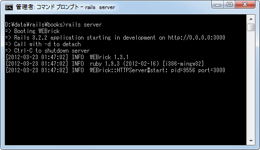
ブラウザから次のURLへアクセスして下さい。
http://localhost:3000/hello
「booklist」コントローラの「hello」アクションが呼び出され、アクションの中でモデルを使ってデータベースからデータを取得し、最終的に対応するビューが呼び出されて画面に次のように表示されます。
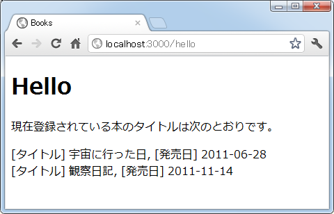
このようにモデルを利用してデータベースからデータを取得し、そのデータを使った結果を利用者のブラウザ上に表示させることができました。
以上でサンプルアプリケーションを使った動作確認は完了です。コントローラとアクション、ビュー、そしてモデルについては別のページにてより細かい利用方法について解説を行ないます。
( Written by Tatsuo Ikura )

著者 / TATSUO IKURA
初心者～中級者の方を対象としたプログラミング方法や開発環境の構築の解説を行うサイトの運営を行っています。